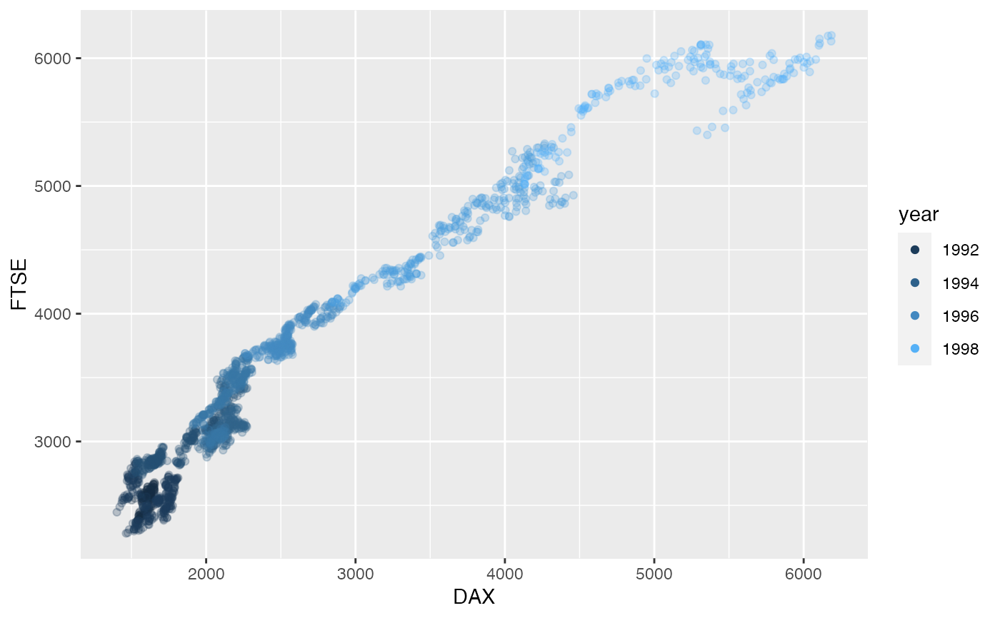

prepare_scatter_plot.RdReads a data frame and prepares a scatter plot.
prepare_scatter_plot(df, x, y, color = "", size = "", loess = 0, alpha = min(1, 1/((1 + (max(0, log(nrow(df)) - log(100)))))))
| df | Data frame containing the data |
|---|---|
| x | a string containing the column name of the x variable |
| y | a string containing the column name of the y variable |
| color | a string containing the column name of the variable providing the color aesthetic (can be numerical or a factor) |
| size | a string containing the column name of the variable providing the size aesthetic |
| loess | a numerical scalar
|
| alpha | The alpha value to be used. If missing, it calculates a default based on the sample size |
the plot as returned by ggplot
df <- data.frame(year = floor(stats::time(datasets::EuStockMarkets)), datasets::EuStockMarkets[, c("DAX", "FTSE")]) prepare_scatter_plot(df, x="DAX", y="FTSE", color="year")